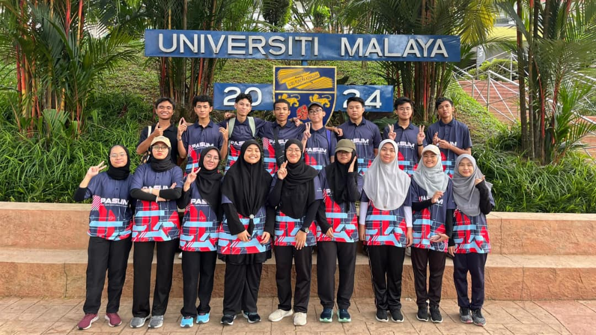
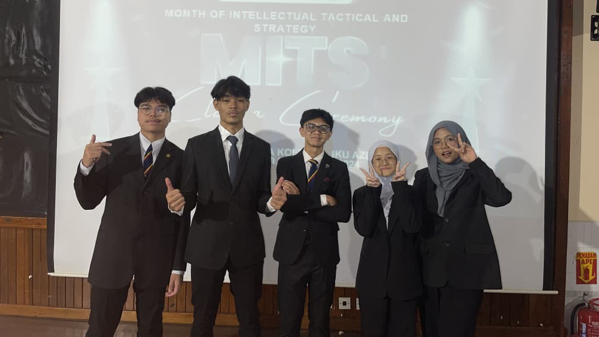
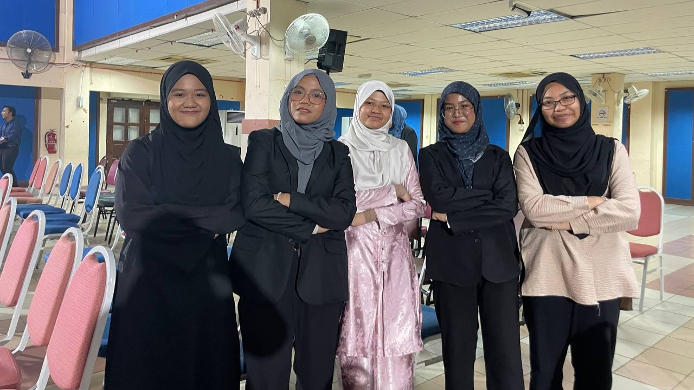

Leadership & committees
Deputy Secretary · JKP ADIN
Role summary
- Served as Deputy Secretary for the Supreme Council for Academic and Intellectual Development.
- Supported the management and coordination of academic and intellectual development initiatives.
- Assisted with administrative documentation, programme coordination, communication and committee operations.
- Built leadership, organisation, communication and time-management skills while working closely with council members.
Moments



